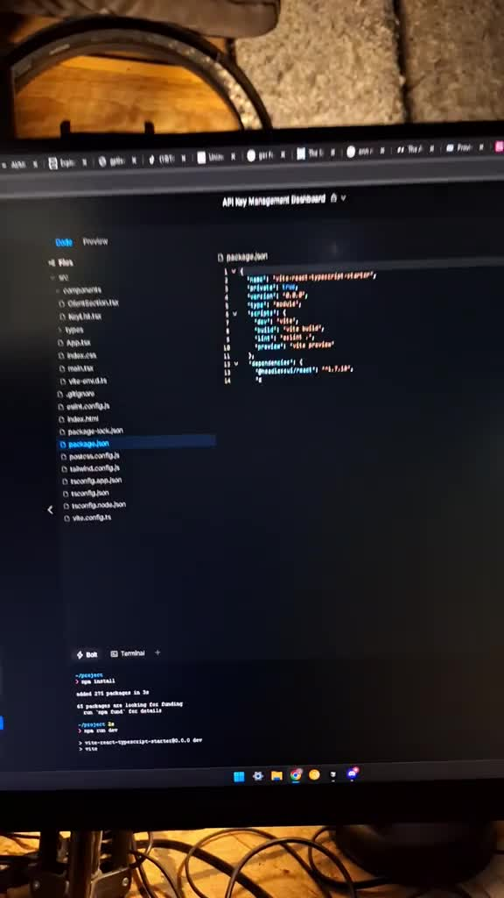
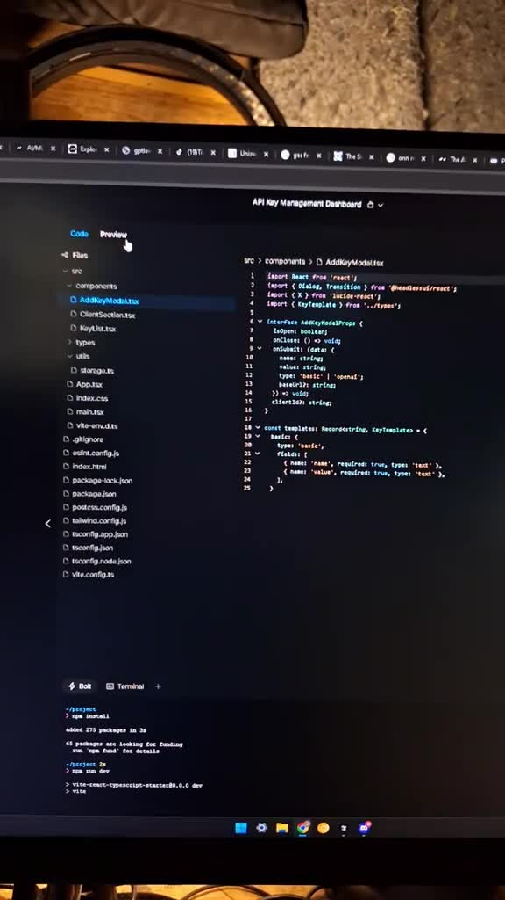
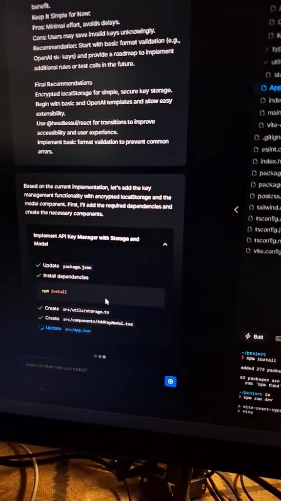

The coding process begins with accessing a specific platform for rapid development, emphasizing efficiency. It includes concepts like loops for iterative code execution and addresses memory management challenges, likened to a 'rubber band' effect. The environment is dynamic, with real-time coding and ongoing updates, particularly through containerization to maintain compatibility across systems. Anticipation builds as developers await the results of their code, indicating the complexity and engagement of the task, possibly involving advertising features.
The process begins with accessing a coding platform, indicated by the phrase 'go to bolt dot new.' This suggests the use of a specific coding environment or tool designed for rapid development. The intent is to initiate coding immediately, implying a focus on efficiency and immediacy in programming tasks.
A loop is mentioned, which typically refers to a programming structure that repeats a block of code. This could indicate that the code being developed requires iterative processes or repeated executions. The statement about memory being 'full' implies that the coding environment is reaching its capacity, which can affect performance. The analogy of a 'rubber band' suggests a buildup of pressure or complexity in the code that, once released, allows for rapid execution of the coding process.  
The coding process is described as ongoing and dynamic, with references to 'coding, coding, coding.' This indicates an active development environment where changes are being implemented in real time. The mention of wanting to make the video longer but being constrained suggests that the coding process is complex and potentially time-consuming, yet engaging enough to warrant extended demonstration.
Containerization is referenced, a process in software development that involves packaging code and its dependencies together to ensure consistent execution across different environments. This is a crucial practice in modern development to avoid issues related to software compatibility. The focus on 'updating even more code' indicates an ongoing process of refining and enhancing the software being developed, showcasing an iterative approach to coding. 
The anticipation of the results is palpable, with phrases like 'let's see it' and 'show me.' This reflects a common experience in programming where developers eagerly await the outcome of their code execution. The mention of an 'ad key' suggests that the code being tested may involve advertising functionalities or features, which adds a layer of complexity and a specific use case to the coding process.
Introduction to Coding Process -
- Accessing a coding platform for rapid development
- Focus on efficiency and immediacy in programming tasks
Loop and Memory Management -
- Use of loops indicates iterative processes in code
- Memory capacity issues can affect performance, represented by a 'rubber band' analogy
Real-Time Coding Execution -
- Ongoing and dynamic coding process
- Changes are implemented in real time, indicating complexity and engagement
Containerization and Code Updates -
- Containerization ensures consistent execution across environments
- Ongoing refinement and enhancement of the software through iterative coding
Anticipation of Results -
- Eager anticipation of code execution outcomes
- Potential involvement of advertising functionalities adds complexity to the coding process
Containerization: A process in software development that involves packaging code and its dependencies together to ensure consistent execution across different environments.
Loop: A programming structure that repeats a block of code, indicating that the code requires iterative processes or repeated executions.
Memory Management: The process of managing computer memory allocation and usage, which can affect performance when memory is full.
Real-Time Coding Execution: An active development environment where changes are implemented dynamically and continuously as coding progresses.
Rapid Development: A focus on efficiency and immediacy in programming tasks, enabling quick initiation and progression of coding.
Software Compatibility: The ability of software to function correctly across different computing environments, often addressed through practices like containerization.
What is the first step in the coding process? The first step is to access a coding platform, specifically indicated by the phrase 'go to bolt dot new,' which suggests using a specific tool for rapid development.
What does a loop refer to in programming? A loop refers to a programming structure that repeats a block of code, indicating that the code requires iterative processes or repeated executions.
What does it mean when the memory is described as 'full'? When memory is described as 'full,' it implies that the coding environment is reaching its capacity, which can affect performance.
What analogy is used to describe the buildup of pressure in code? The analogy of a 'rubber band' is used to suggest a buildup of pressure or complexity in the code that, once released, allows for rapid execution.
How is the coding process characterized? The coding process is characterized as ongoing and dynamic, with active development where changes are implemented in real time.
What does the desire to make the video longer imply? The desire to make the video longer suggests that the coding process is complex and potentially time-consuming, yet engaging enough to warrant extended demonstration.
What is containerization in software development? Containerization is a process that involves packaging code and its dependencies together to ensure consistent execution across different environments.
Why is updating code important in development? Updating code is important as it reflects an ongoing process of refining and enhancing the software being developed, showcasing an iterative approach to coding.
What feelings are associated with anticipating coding results? Anticipation of results is characterized by eagerness, reflected in phrases like 'let's see it' and 'show me,' as developers await the outcome of their code execution.
What does the mention of an 'ad key' suggest? The mention of an 'ad key' suggests that the code being tested may involve advertising functionalities or features, adding complexity to the coding process.